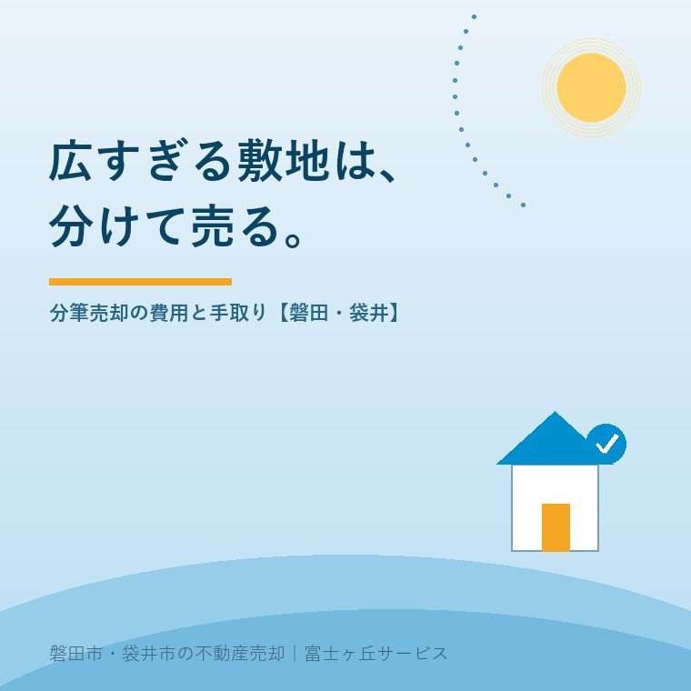

2026年8月1日｜カテゴリ：土地・売却戦略

この記事の要点
Q. 実家の敷地が150坪。「広すぎて買い手がいない」と言われた。どうすれば？
A. 敷地を2つに分けて売る「分筆売却」という方法があります。1区画あたりの総額が下がることで、地元の子育て世帯など買える人の層が一気に広がります。ただし境界確定測量や造成の費用が先にかかり、道路付けや水道、農地の有無で成立しないこともあるため、「分けたらいくらかかり、いくらで売れるか」の試算が先です。磐田市・袋井市では、介護施設の運営から不動産事業を始めた富士ヶ丘サービスのような地域密着の会社に、その試算から相談するという選択肢があります。
「4つの値段」の記事で、広い実家ほど「単価×面積」どおりに売れない、と書きました。150坪の土地は、坪単価どおりなら立派な金額になるはずなのに、その総額を出せる買主が地方にはほとんどいない──これが「広すぎて売れない」の正体です。今日はその実務的な回答編。敷地を分けて、買える人の土俵に乗せる「分筆売却」の話です。
買主が家探しで最初に決めるのは総予算です。たとえば土地に出せる予算が1,000万円前後の子育て世帯にとって、150坪・2,000万円の土地は最初から検討外。ところが同じ土地が75坪・1,000万円の2区画になれば、2組の買主候補が現れます。分けることで単価が多少上がることさえあります。1区画の「広さの価値」より、2区画の「買いやすさの価値」が上回る──これが地方の広い土地の現実です。
| ステップ | 内容 | 費用の目安 |
|---|---|---|
| ①境界確定測量 | 土地家屋調査士が隣地・道路との境界を確定（隣地所有者の立ち会い・市の道路査定） | 数十万円〜100万円程度（筆数・隣接者数で変動） |
| ②分筆登記 | 確定した境界をもとに、1筆の土地を2筆以上に分ける登記 | 調査士報酬＋登録免許税（分筆後の筆数×1,000円） |
| ③解体・造成（必要に応じて） | 建物の解体、区画の整地、ブロック・土留め | 状況次第（解体の記事参照） |
| ④上下水道の引き込み | 新しい区画に給排水の引き込みがなければ新設 | 1区画あたり数十万円〜が目安 |
| ⑤2区画で売却 | 同時売り出し、または1区画ずつ | 仲介手数料等 |
ポイントは、費用が先に出て、回収は売れてからという構造です。だからこそ「かかる費用の合計」と「2区画での売却見込み額」を最初に並べ、1区画のまま売る場合と手取りを比較する──この試算をやらずに測量から始めてはいけません。なお、境界確定測量は分筆をしない売却でも求められることが多い工程なので、無駄になりにくい投資です。
この①〜⑤の見極めは、図面と現地を見ないと判断できません。「分ければ売れる」は魅力的ですが、成立しないケース・費用倒れになるケースも実際に多い、と正直にお伝えしておきます。
磐田・袋井の旧集落や幹線道路沿いには、100坪超の敷地が普通にあります。エリア別の記事で書いたとおり、この地域の買主の主役は車2台前提の子育て世帯。彼らの現実的な予算に合う区画を作れれば、「広すぎて動かない土地」が「2組の家族の新居」に変わります。磐田市の住宅取得補助のような制度も、この層の背中を押しています。
一方で、測量・造成・水道と費用が積み上がる計画でもあります。当社では、分筆した場合／しない場合の手取り比較、土地家屋調査士・解体業者との連携、売り出しのタイミングまでを一つの計画としてご提案しています。広い敷地は、家族だけで悩むより、図面を挟んで一緒に考えるのが近道です。
富士ヶ丘サービスは、磐田市・袋井市に特化した地域密着の会社として、広い実家の「分ける・分けない」の試算からお手伝いしています。ふじがおか実家カルテで、敷地の図面と登記から一緒に確認しましょう。
ふじがおか実家カルテ｜「分けたらどうなる？」の試算に
広い敷地の分け方と手取り。図面から、まず1冊に。
登記情報と公図・固定資産税通知書から、敷地の形状・道路・農地を宅建士が確認し、分筆売却の成立可能性と概算の手取り比較を整理してお渡しします。
本記事は2026年8月1日時点の情報をもとに作成しています。測量・造成等の費用は敷地の状況により大きく変わります。分筆・境界確定は土地家屋調査士へ、開発許可の要否は磐田市・袋井市の担当窓口へ、個別の手取り試算は査定とあわせてご確認ください。
磐田市・袋井市の実家じまい・相続空き家相談
固定資産税通知書だけでも相談できます
住所があいまいでも、通知書や写真から名義・道路・農地・残置物の確認順を整理します。カルテ申込またはLINEで状況を送ってください。
富士ヶ丘サービス株式会社／静岡県磐田市見付5789番地1／TEL:0538-31-3308／静岡県知事 (2) 第14083号／代表取締役・宅地建物取引士 大石 浩之